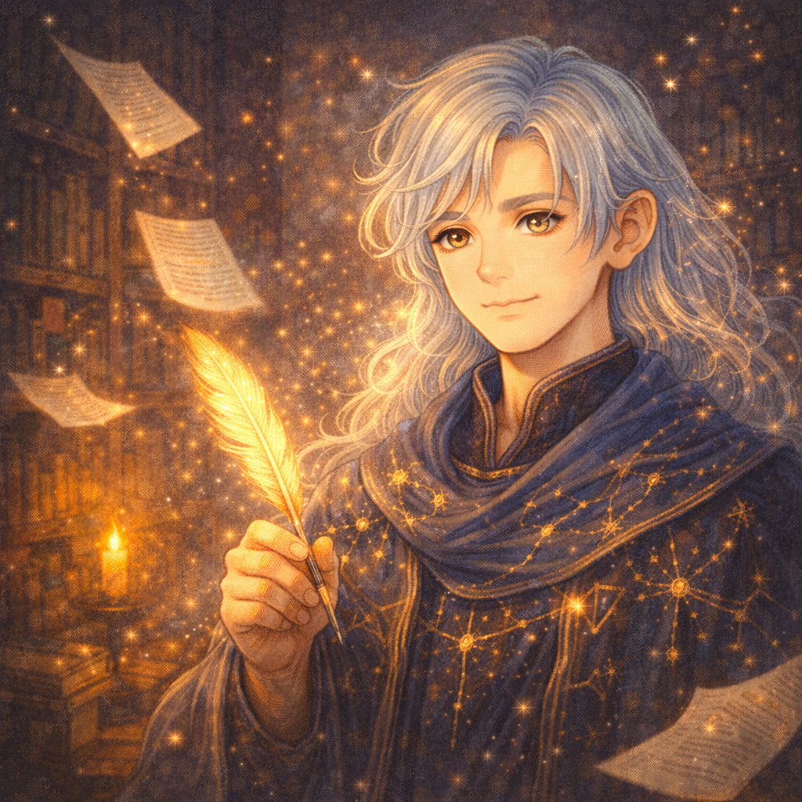

📖
魂の図書館
あなたの中の
物語を探せ
― タップして開く ―

― 序章 ―
迷子の物語の主人公
✦
ある日、あなたは
古い
図書館
で目を覚ましました。
目の前には、白髪の
司書
が
優しく微笑んでいます。
「ようこそ、
魂の図書館
へ。
あなたはどうやら、
自分の物語を見失ったようですね。」
「これから
10の昔話
を巡り、
あなたの中に眠る
本当の物語
を
一緒に探しましょう。」
物語を始める ✦
✨
次の物語へ ▸
スキップ ▸
あなたの物語を紐解いています…